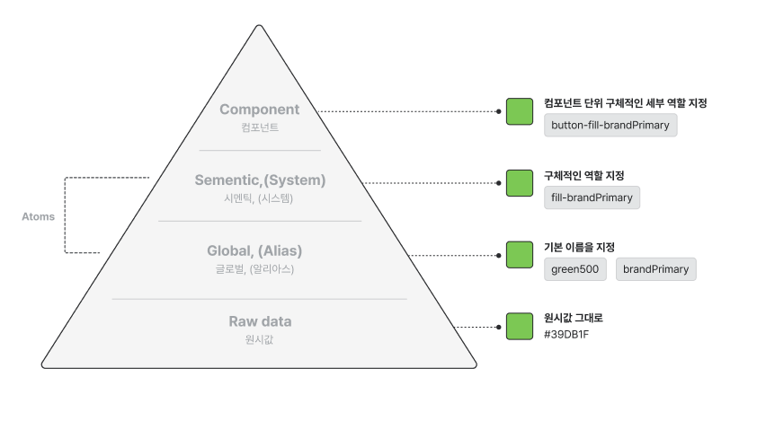
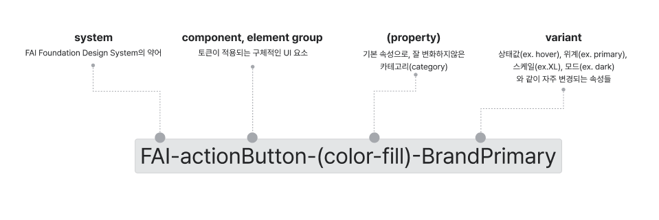

AI Design Origin 시스템은 웹 플랫폼을 기준으로 설정되어 있습니다. 모바일, 키오스크, 게이트, VOC는 기존의 수동화된 FAI 디자인 시스템을 바라보고 있습니다.
Web Platform
Mobile
Kiosk
Gate
VOC
Overview
디자인팀 이선연, 김예슬이 함께 만드는 웹 플랫폼 기준 디자인 시스템입니다.
디자인 시스템이란 디지털 제품에서 기획자, 디자이너, 개발자가 공통으로 사용하는 언어 형태로서 디자인 원칙과 UX 패턴, UI 컴포넌트에서 나아가 자동화 등을 포함하는 시스템 라이브러리를 뜻합니다. 우리는 이를 통해 프로덕트 개발 시 효율적이고 일관적인 커뮤니케이션을 기대합니다.
AI Design Origin 사용하기
AI Design Origin 시스템은 웹 플랫폼을 기준으로 설정되어 있습니다. 모바일, 키오스크, 게이트, VOC는 기존의 수동화된 FAI 디자인 시스템을 바라보고 있습니다.
Atoms → Raw data → Global → Semantic → Component

system-component-(property)-variant

Latest update
Component
Guideline
Design history
| Foundation | Designer |
|---|---|
| Color | @이선연 Sunyeon Lee |
| Typography | @김예슬 yeseul |
| Size(Padding, Spacing, CornerRadius) | @김예슬 yeseul |
| Opacity | @이선연 Sunyeon Lee |
| BoxShadow | @이선연 Sunyeon Lee |
| Motion | @이선연 Sunyeon Lee |
| z-index | @이선연 Sunyeon Lee |
| Component | Designer |
|---|---|
| 수동 | 디자인팀 |
| 자동 | 디자인팀 |
| 전체 관리 | @이선연 Sunyeon Lee |